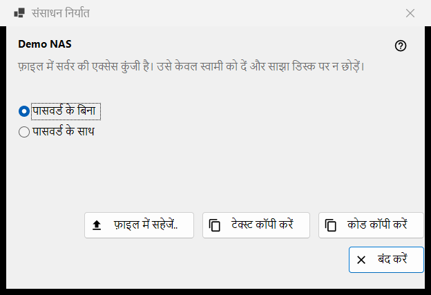
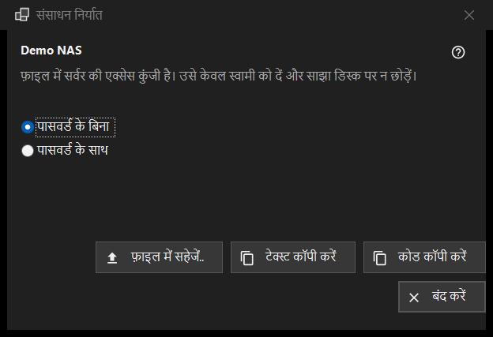

संसाधन निर्यात
यह किस लिए है
एक SFTP सर्वर की सेटिंग इस तरह तैयार करता है कि कोई दूसरा कंप्यूटर या फ़ोन उन्हें आयात कर सके। यह संसाधन सूची के और मेनू में निर्यात.. कमांड से खुलता है और इसके लिए चुना हुआ संसाधन ज़रूरी है; Share Manager द्वारा साझा किया गया फ़ोल्डर इसके बजाय Share Manager से निर्यात किया जाता है।


इस क्रम में
- संसाधन के नाम के नीचे की चेतावनी पढ़ें।
- पासवर्ड के बिना (डिफ़ॉल्ट) या पासवर्ड के साथ चुनें।
- फ़ाइल में सहेजें.. बटन दबाएँ, या सेटिंग को टेक्स्ट या छोटे कोड के रूप में कॉपी करें।
- नतीजा केवल उसके मालिक को दें।
तत्व
चेतावनी
नाम के नीचे की पंक्ति बताती है कि फ़ाइल में सर्वर की एक्सेस कुंजी है: इसे केवल उसके मालिक को दें और कभी साझा डिस्क पर न छोड़ें। यह फ़ाइल, कॉपी किए गए टेक्स्ट और कोड, तीनों पर लागू होता है।
पासवर्ड के बिना या साथ
पासवर्ड के बिना शुरू में चुना होता है। पासवर्ड के साथ तभी सक्षम होता है जब सहेजा गया पासवर्ड वापस पढ़ा जा सके; वरना यह संकेत दिखता है: पासवर्ड सहेजा नहीं गया है - फ़ाइल उसके बिना बनेगी। पासवर्ड निर्यात के लिए केवल मेमोरी में डिक्रिप्ट होता है और कहीं और नहीं जाता।
फ़ाइल में सहेजें, टेक्स्ट कॉपी, कोड कॉपी
फ़ाइल में सहेजें.. सेव डायलॉग के ज़रिए .fmscfg फ़ाइल लिखता है; लेखक FAT या exFAT डिस्क, नेटवर्क डिस्क और ऐसे फ़ोल्डर अस्वीकार करता है जिन्हें दूसरे उपयोगकर्ता बदल सकते हैं, और कभी आधी लिखी फ़ाइल नहीं छोड़ता। टेक्स्ट कॉपी करें सेटिंग दस्तावेज़ को क्लिपबोर्ड पर रखता है और कोड कॉपी करें उसी सामग्री वाला एक छोटा कोड। दोनों गोपनीयता चिह्नों के साथ कॉपी होते हैं (क्लिपबोर्ड इतिहास नहीं, क्लाउड सिंक नहीं)। स्थिति पंक्ति नतीजा दिखाती है।
क्या निर्यात हो सकता है
केवल वह SFTP सर्वर जिसकी कुंजी व्यूअर को पहले से याद है। विंडो हर हाल में खुलती है, और बटन दबाने पर स्थिति पंक्ति में इनकार दिखता है: नेटवर्क फ़ोल्डर (SMB) का वर्णन इस फ़ाइल से नहीं हो सकता; सर्वर की कुंजी याद नहीं है (संसाधन को एक बार खोलकर कुंजी की पुष्टि करें); संसाधन में सौंपने लायक कोई पता नहीं है; फ़ोल्डर ऐसे रूप में लिखा है जिसे फ़ाइल स्वीकार नहीं करती (इसे संपादित करें.. से ठीक करें)।